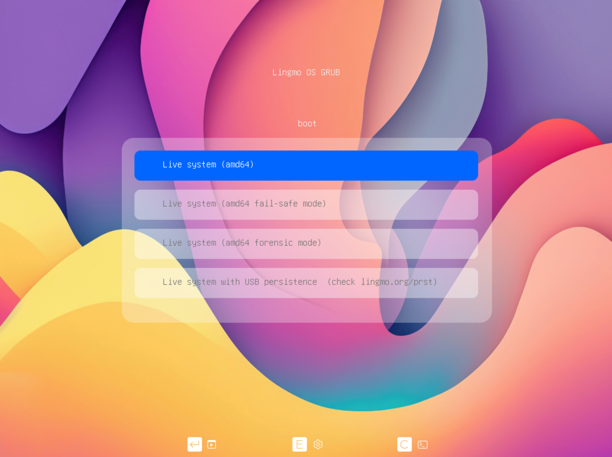
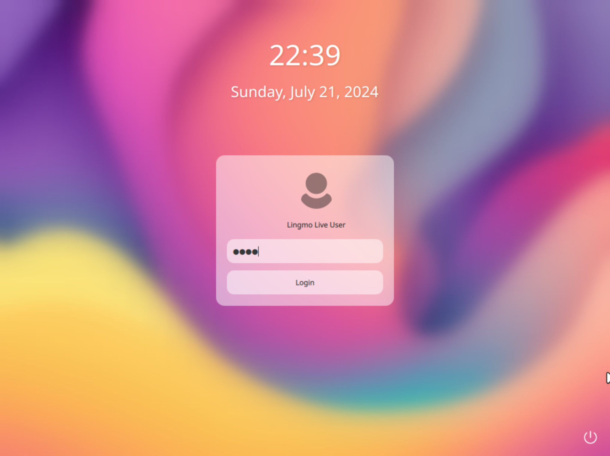
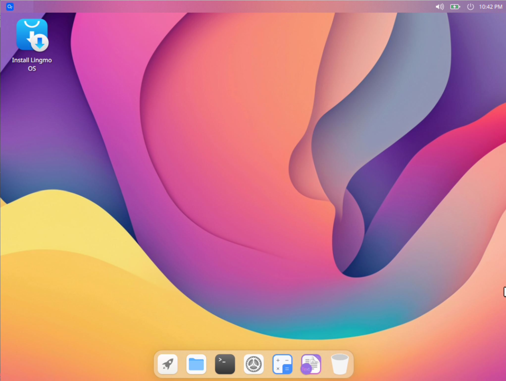
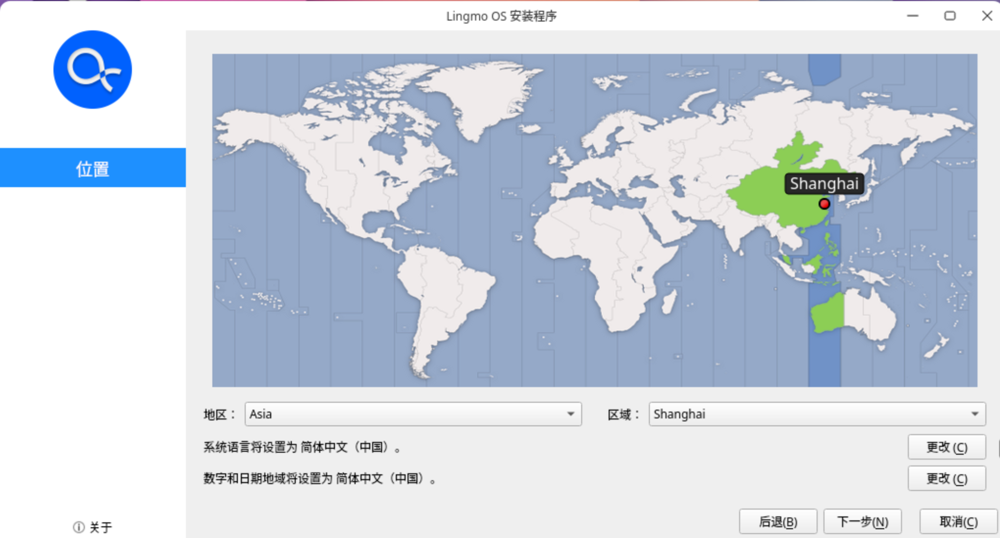
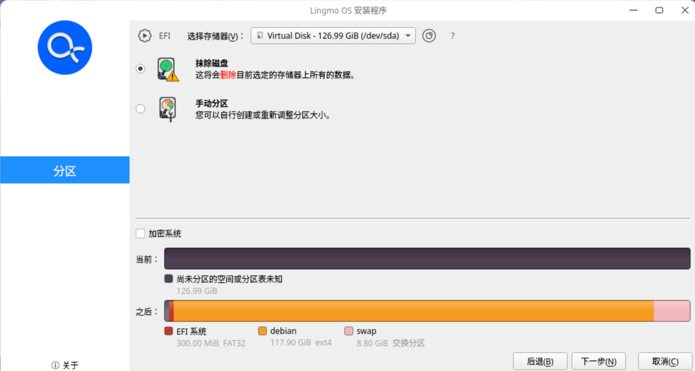
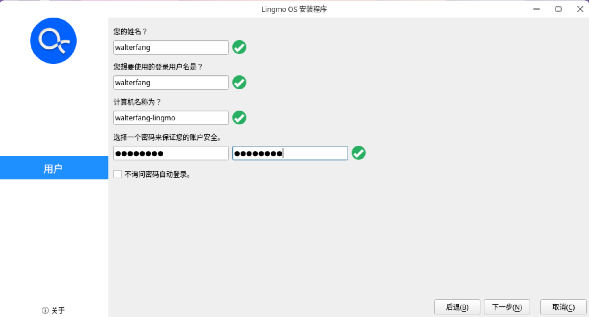
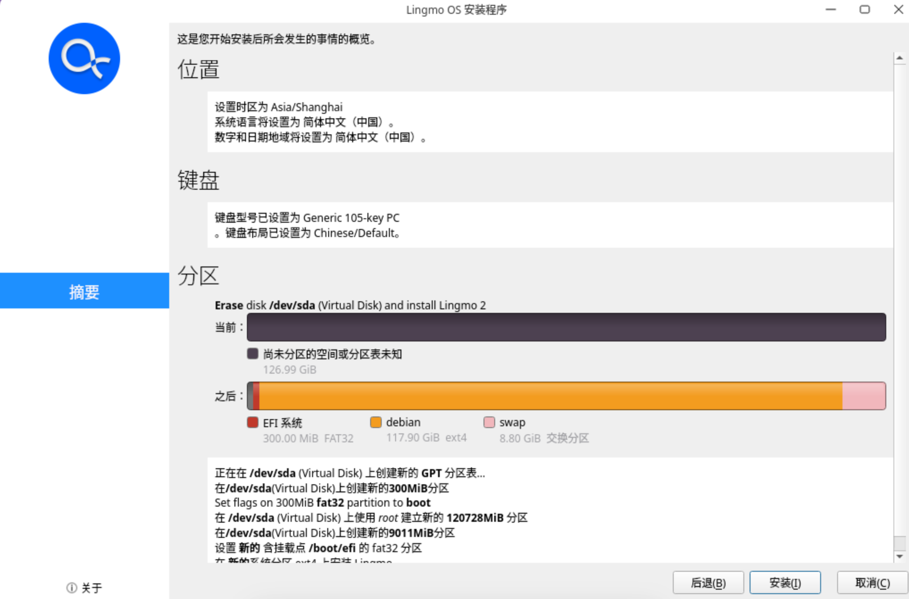
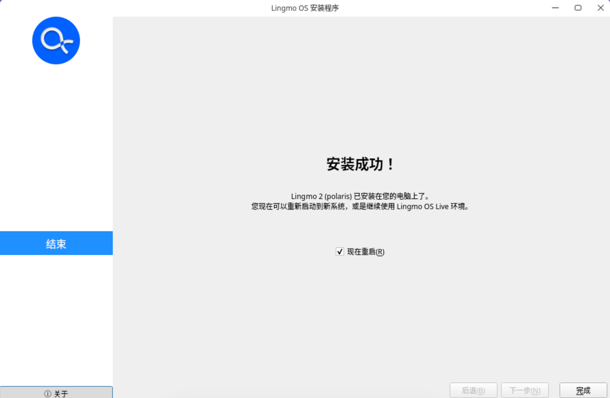
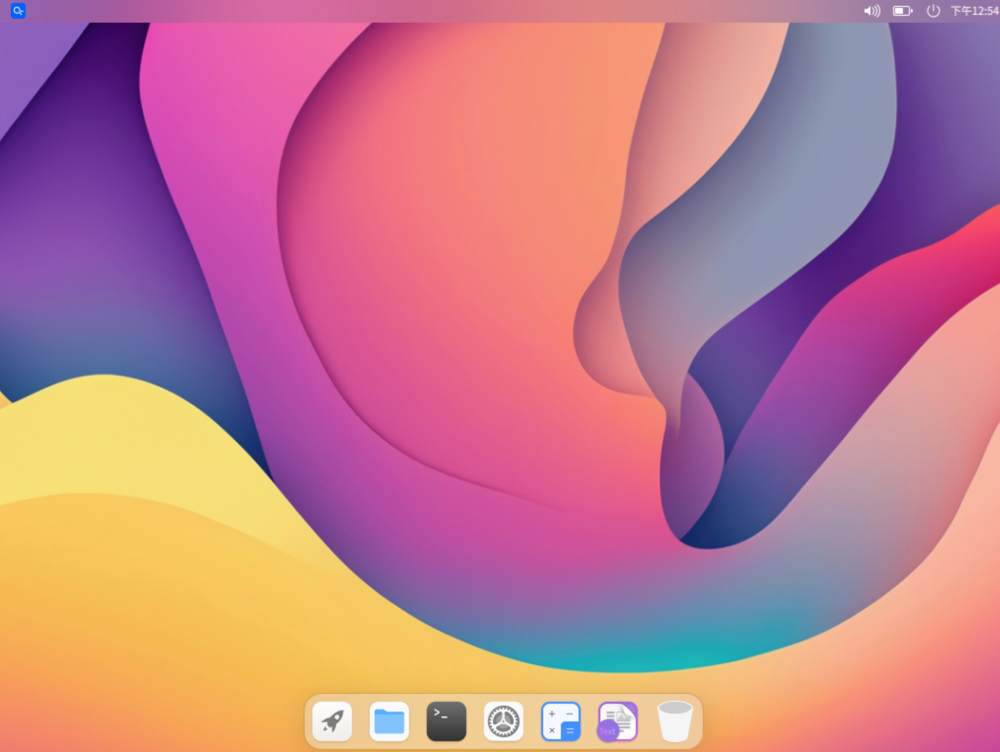

Lingmo OS 安装教程
警告：在适用法律允许的范围内，Lingmo GNU/Linux 不提供任何担保。
本文将指导您如何安装 Lingmo OS。
准备工作
-
下载并安装
Lingmo OS的镜像文件。您可以在 Lingmo OS 下载页面 下载最新版本的ISO安装镜像或在 Github Actions 页面下载最新测试版的ISO安装镜像。注意：测试版具有一定的不稳定性，如果您是小白，建议您下载正式版。
-
准备一个 U 盘或移动硬盘，要求容量至少为 16 GB，并将其格式化为 FAT32 或 NTFS 文件系统。
-
下载并安装
Rufus写盘软件，用于将 U 盘制作成用于安装系统的启动盘。
安装 Lingmo OS
- 将待安装设备保持关机状态，插入 U 盘或移动硬盘，按下开机键，同时根据自己的机型连续多次按下进入启动顺序设置界面的按键（一般为
F12），并通过上下键将您的 U 盘或移动硬盘设为第一启动设备。 - 等待 U 盘或移动硬盘启动，系统会自动检测到并加载
Lingmo OS的安装镜像。 此时直接按下Enter键，即可进入Lingmo OS的安装程序。 Lingmo Live User的默认密码为live，输入后单击Login按钮即可进入Live系统。  此时双击桌面上的Install Lingmo OS即可进入安装程序。  - 安装程序默认为英文，单击列表即可切换为简体中文。

- 设置位置。在地图上单击靠近上海的位置即可自动定位至上海。 
- 设置键盘。你可以根据自己的喜好设置自己想要的键盘布局。当然如果您不知道这是什么，亦可保持默认设置，不会影响后续使用。

- 磁盘分区。这一步首先需要您单击
选择存储器右侧的列表，在弹出的列表中选择需要安装Lingmo OS的磁盘。接下来，建议您直接选择抹除磁盘选项，当然如果您对磁盘分区有一定经验，亦可参考本文对磁盘进行分区。  - 设置用户。这一步中您可以设置您的用户名、计算机名称以及您的登录密码。注意：系统安装完毕后，您在这一步设置的用户即您的登录用户，而非
root用户，请牢记您的密码。  - 安装摘要。在这一步中，系统会显示您刚才的设置，确认无误后即可单击
安装按钮开始安装。  - 开始安装。安装过程中，系统会显示安装进度。等待安装完毕后，即可重启进入
Lingmo OS的登录界面。
- 安装完成。重启计算机，并把出您的安装介质。再次开机后，即可开始体验激动人心的
Lingmo OS！  